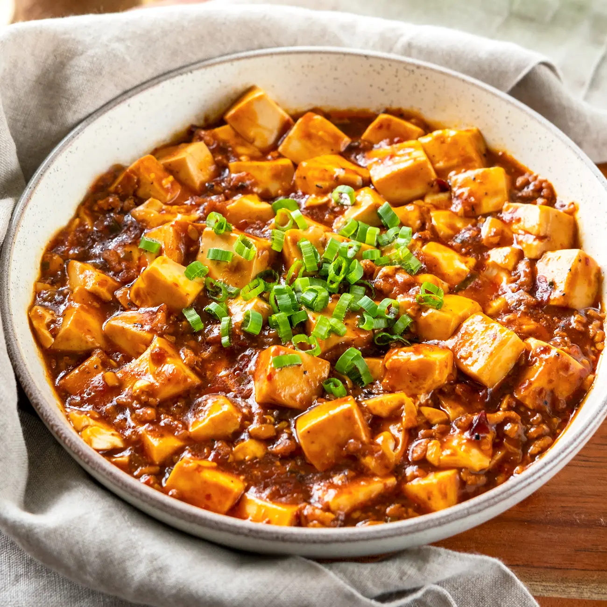

Mapo Tofu Recipe

Description:
To make mapo tofu, first prepare the ingredients: drain a block of soft tofu and cut it into 1-inch cubes,then gently blanch the cubes in a pot of salted simmering water for a few minutes before draining. Meanwhile, in a wok or large pan over high heat, add oil and cook ground pork, breaking it up with a spatula until it is crispy and the fat has rendered. Reduce the heat to medium and stir in minced ginger and garlic, cooking until the oil turns a vibrant red and the aromatics are fragrant. Next, pour in chicken or vegetable stock
and add soy sauce and a pinch of sugar, bringing the mixture to a simmer. Carefully add the blanched tofu cubes to the wok and simmer for a few minutes, allowing them to absorb the rich flavors. Gradually mix in a cornstarch slurry (cornstarch dissolved in water) to thicken the sauce to a glossy consistency. Finish the dish by stirring in chopped
green onions and a drizzle of sesame oil, then transfer to a serving bowl and garnish with freshly ground Sichuan peppercorn powder for the authentic numbing sensation. Serve immediately with hot steamed rice.
Main Ingredients:
- Soft tofu
- Ground pork (or ground beef, chicken, or mushrooms for a vegetarian version)
- Sichuan chili bean paste (doubanjiang)
- Fermented black beans
- Sichuan peppercorns
- Garlic
- Ginger
- Scallions
Sauce Ingredients:
- Chicken stock or water
- Soy Sauce
- Shaoxin Wine
- Sugar
- Neutral Oil
- Sesame Oil
- Chilli or Chilli flakes
Steps:
-
Prepare Ingredients: Cube the tofu and blanch it in salted water (optional).
Mince garlic and ginger, chop scallions, and rinse fermented black beans if using.
-
Sauté aromatics and meat: Heat oil in a wok over medium-high heat. Add garlic, ginger,
and black beans (if using) and cook until fragrant. Add the ground meat and cook
until browned, breaking it up as it cooks.
-
Add Seasonings: Stir in the chili bean paste and cook for about a minute until fragrant.
Add soy sauce, stock, and any other liquids, then bring to a simmer.
-
Thicken sauce and finish: Stir in a cornstarch slurry a little at a time until the sauce
thickens to your desired consistency. Add most of the chopped scallions and stir to combine.
-
Serve:Transfer the mapo tofu to a bowl and garnish with the remaining
scallions and ground Sichuan peppercorns, if desired. Serve immediately with steamed rice.
Home